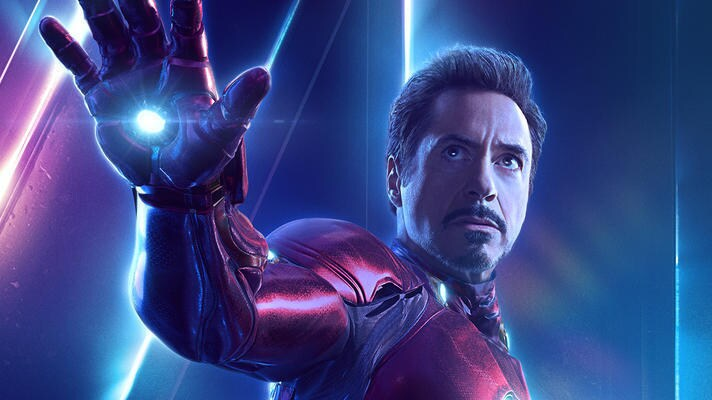

Un miltimillonario, empresario e ingeniero, Tony Stark sufre una lesión en el pecho durante un secuestro en el que sus captores tratan de obligarlo a construir un arma de destruccion masiva. Él crea en su lugar una poderosa armadura para salvar su vida y escapar de su cautiverio. Luego utiliza la armadura para proteger al mundo como Iron Man. A través de su corporacion - Industrias Stark - Tony ha creado muchas armas militares, algunas de las cuales, junto con otros dispositivos tecnológicos de su inevención, se han integrado en su armadura, ayudandolo a luchar contra el crimen.
Iron Man ha hecho apariciones menores en series animadas como:
- Los 4 Fantastiscos (serie animada)
- El increible Hulk
- Los Vengadores
- Los Cueatro Fantásticos: Los Grandes Héroes del Mundo
- Spider-Man (serie de Televisión)
MARVEL

Correo Álvarez García Lizeth Yamile
Álvarez García Lizeth Yamile 2IM10